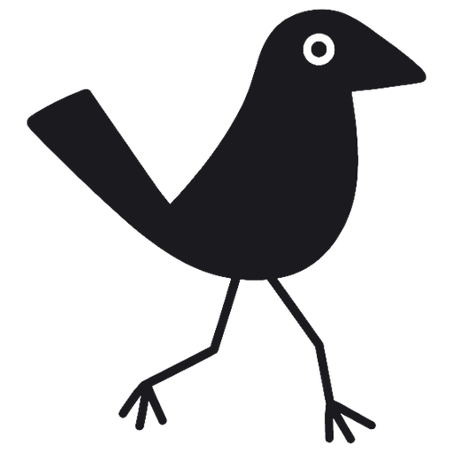
WalkthruBUILT WITH AI. READY FOR PEOPLE?
YOUR NEXT LAUNCH
You built it.Now test it.
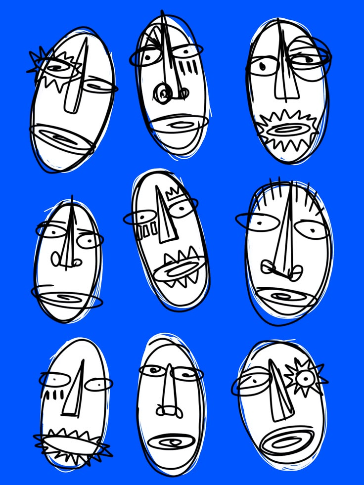
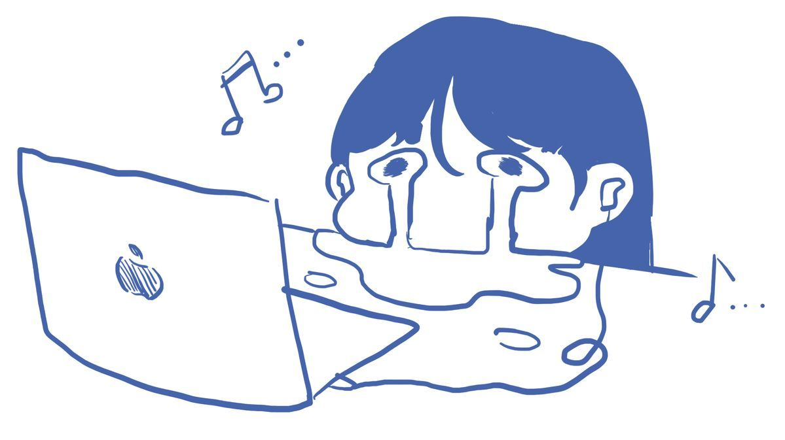
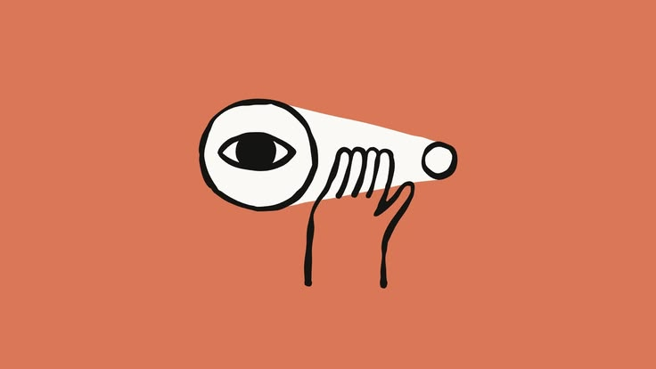
A fresh perspective changes everything.
01 / WALKTHRU
Walkthru
AI TEST USERS. DIFFERENT PERSPECTIVES.
FRESH EYES
Meet yourfresh eyes.
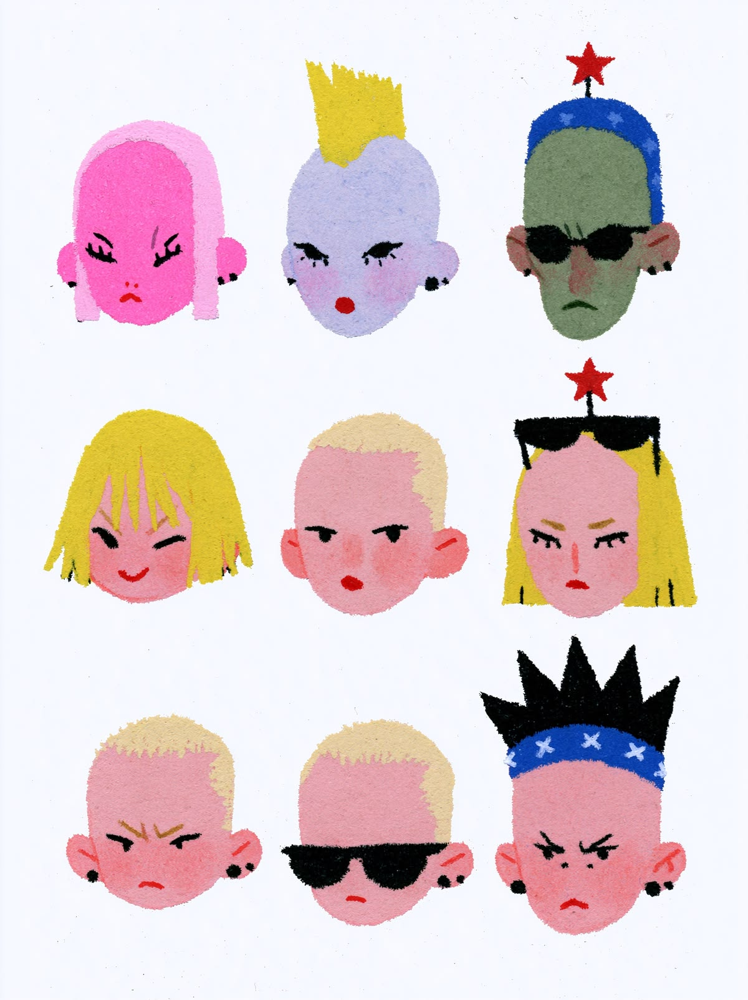
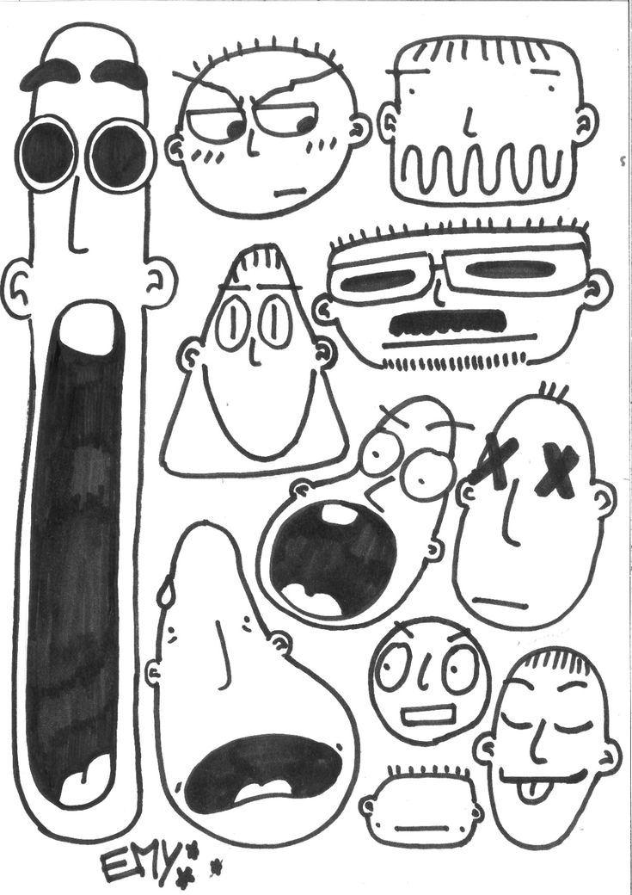
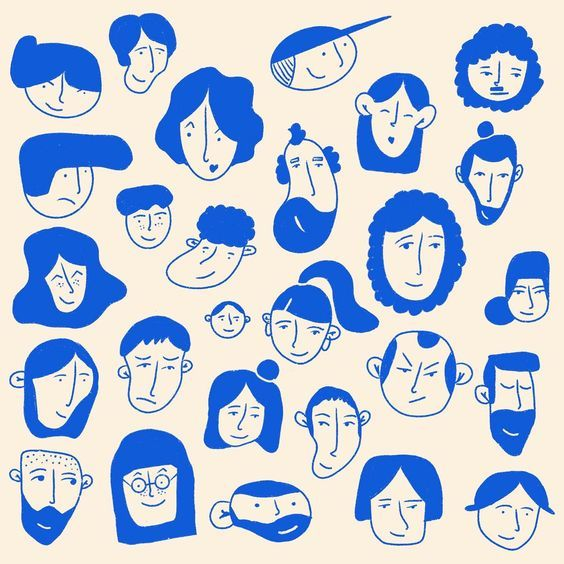
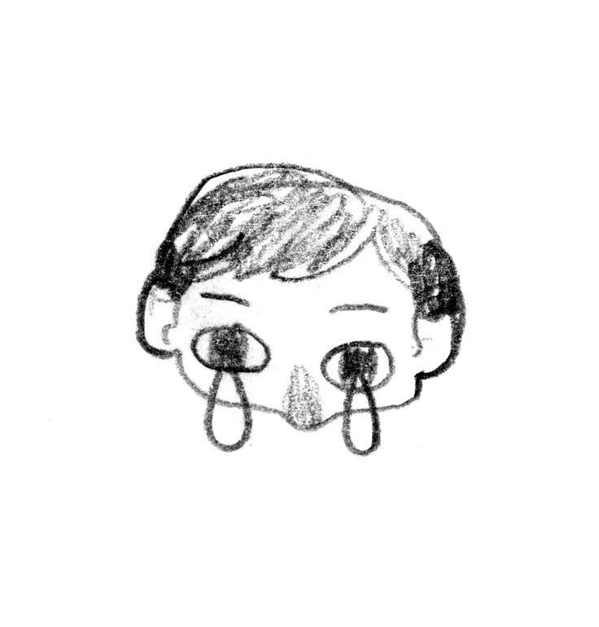
Curiosity is part of the process.
02 / PERSPECTIVE
Walkthru
REAL JOURNEYS. YOUR BROWSER.
They try your flows.
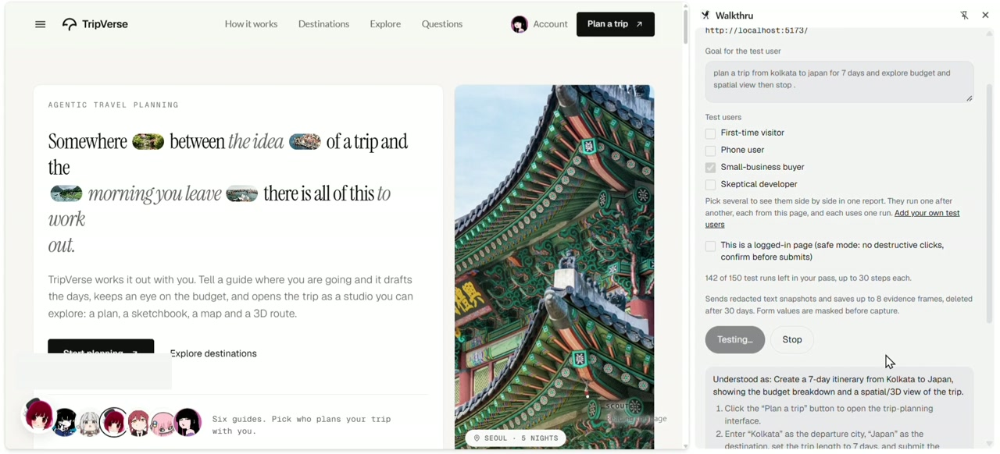
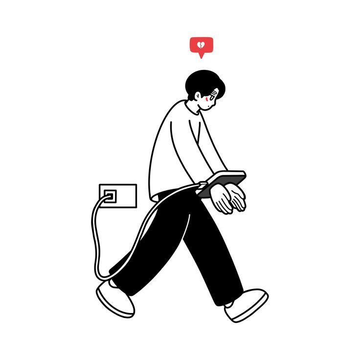
In your own browser.
Try. Notice. Keep the evidence.
03 / THE JOURNEY
Walkthru
OBSERVATIONS YOU CAN ACT ON
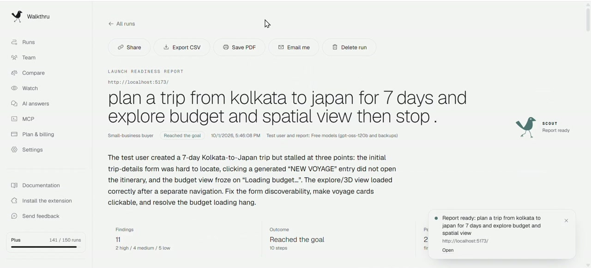
Every step.Saved.
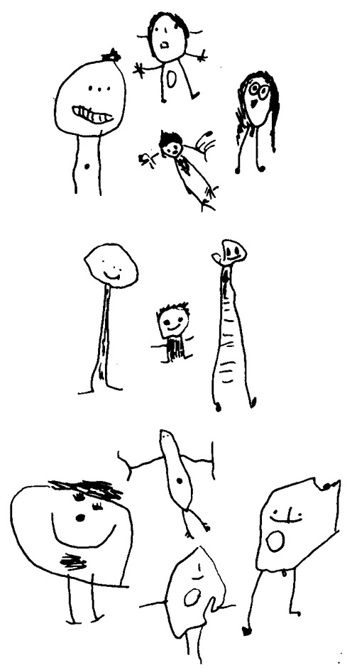
Screenshots. Findings. A clear next move.
04 / EVIDENCE
Walkthru
CHECK THE LAUNCH BASICS
?
Search readiness.
SEO + AI SEARCH
Accessibility.
MORE PEOPLE CAN USE IT
Security hygiene.
PASSIVE CHECKS
05 / THE BASICS
Walkthru
FINDINGS → FIX PROMPT → CODING AGENT
Evidence in.Fixes out.

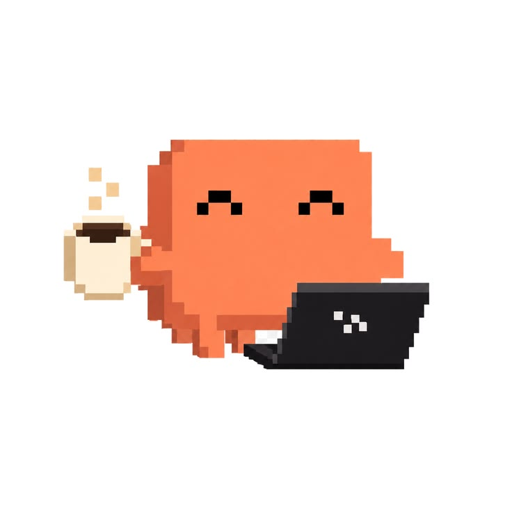
Built for your coding agent. Connected over MCP.
06 / THE NEXT MOVE
Walkthru
YOUR NEXT RELEASE
BUILD TEST LAUNCH
Build.Test.Launch.
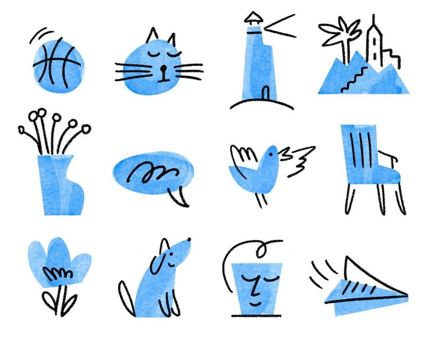
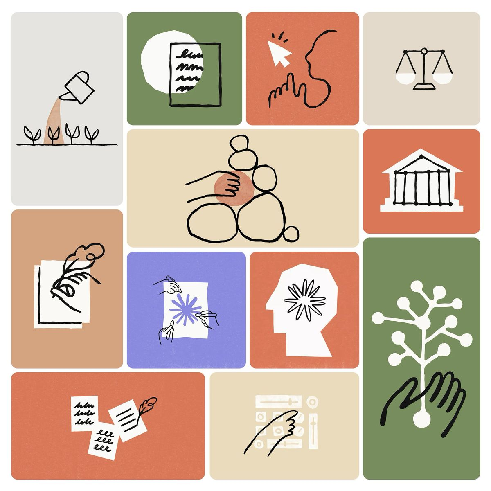
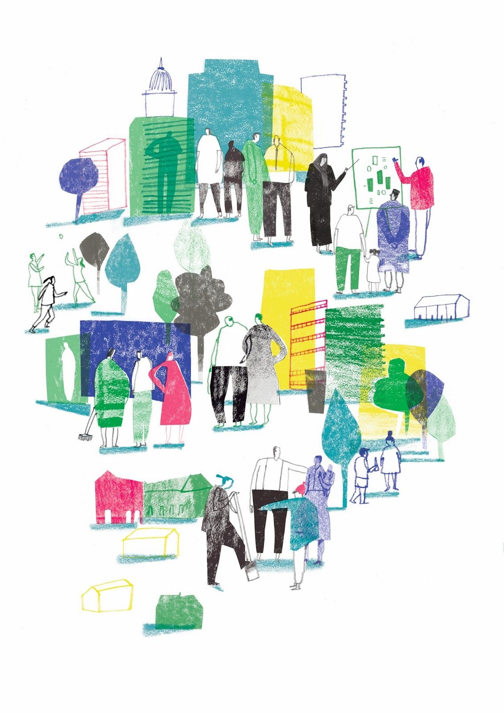
The launch check for apps built with AI.
07 / MAKE YOUR MOVE
Walkthru
Fresh eyes. Before you launch.
TRY YOUR NEXT LAUNCH →
BUILT WITH AI. CHECKED WITH WALKTHRU.
FRESH EYES / CLEAR NEXT MOVE